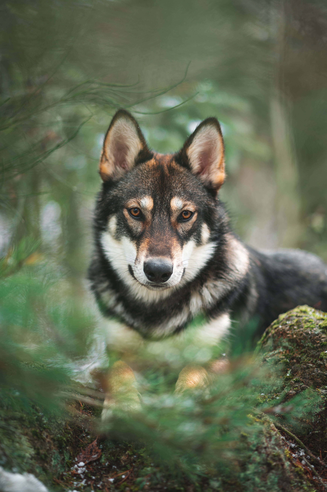

by Yelena Rice
Arguably no other animal on earth has been as important to humans as the wolf. They were gods in the Norse mythologies and nursed Romulus and Remus, the founders of Rome. Most importantly, the wolf was the first animal to ever be domesticated by man, a process still shrouded in mystery that took place well over 10,000 years ago.